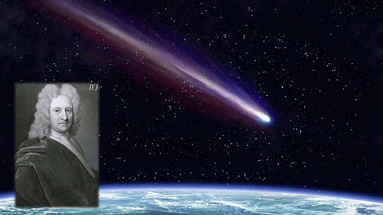

Edmond Halley nació el 8 de noviembre de 1656 en Londres, Inglaterra. Fue hijo de Edmond Halley Sr., un próspero comerciante de jabón, quien apoyó su educación y su interés por la ciencia. Desde joven mostró gran talento para las matemáticas y la astronomía. Estudió en el Queen's College de la Universidad de Oxford, donde comenzó a realizar observaciones astronómicas de gran precisión.
A los 20 años viajó a la isla de Santa Elena, en el Atlántico sur, para observar y catalogar las estrellas del hemisferio sur, un trabajo que le dio reconocimiento internacional. Gracias a estas investigaciones fue elegido miembro de la Royal Society a una edad muy temprana.
Halley es más conocido por haber calculado la órbita del cometa que hoy lleva su nombre, el cometa Halley. Analizando registros históricos, demostró que los cometas observados en 1531, 1607 y 1682 eran en realidad el mismo objeto celeste que regresaba periódicamente. Predijo correctamente que volvería en 1758, aunque él no vivió para verlo, lo que confirmó su teoría.
Además de sus estudios sobre cometas, Halley realizó aportaciones en física, geofísica y navegación. Apoyó y alentó a Isaac Newton a publicar su obra Principia Mathematica, e incluso ayudó económicamente a que se imprimiera, desempeñando un papel clave en la difusión de la teoría de la gravitación universal.
En 1720 fue nombrado Astrónomo Real de Inglaterra y director del Observatorio de Greenwich. Falleció el 14 de enero de 1742 en Greenwich, Inglaterra. Hoy es recordado como uno de los astrónomos más importantes de su tiempo y como la persona que demostró que los cometas podían tener órbitas periódicas, consolidando la aplicación de las leyes de Newton al movimiento de los cuerpos celestes.